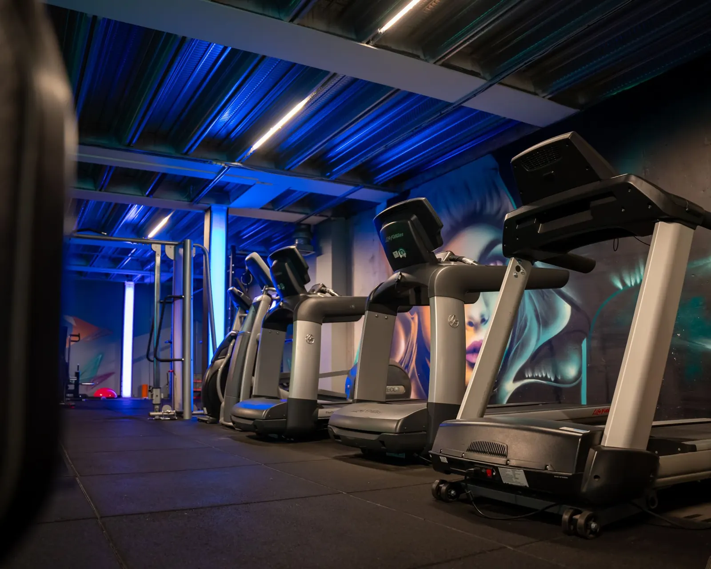
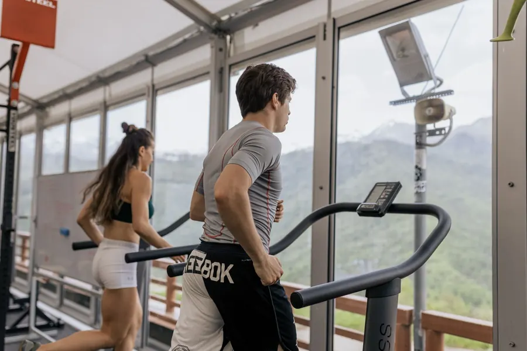
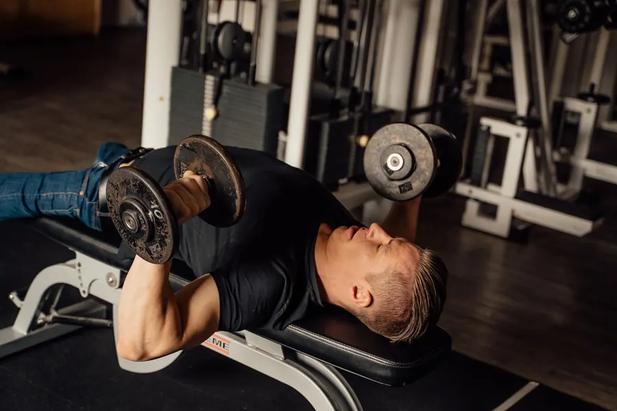
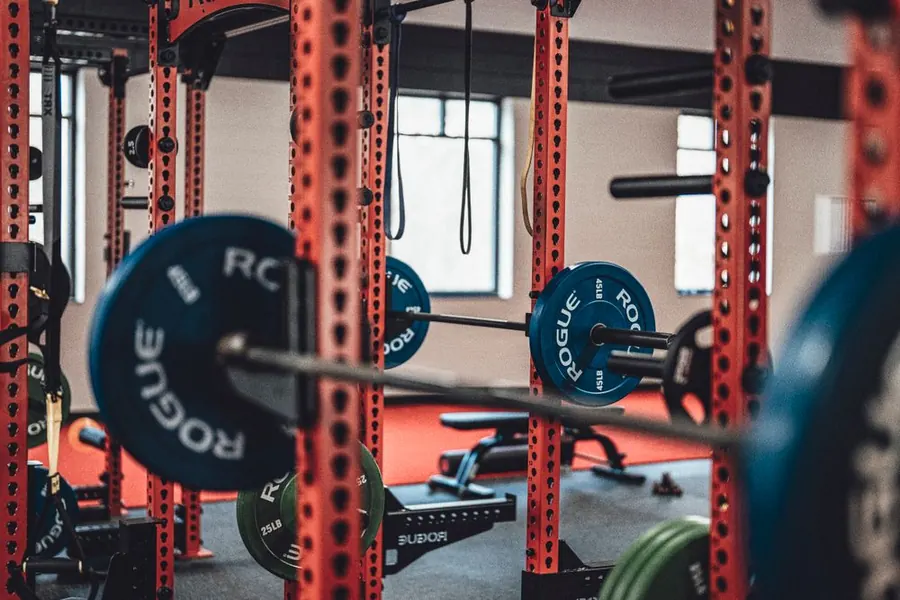
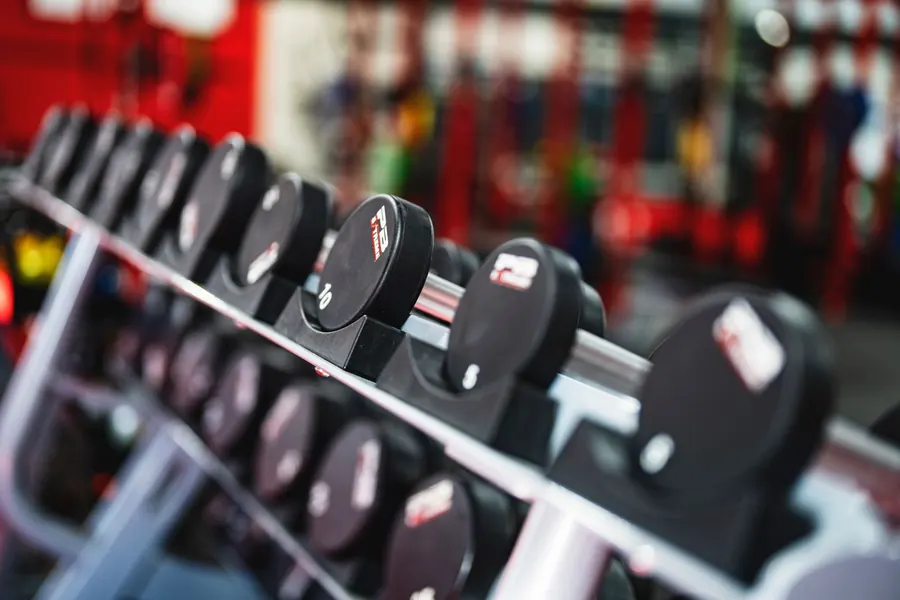

Know your gym.
Train with purpose.
From your first workout to advanced training — understand the equipment, follow structured sessions, and train with confidence.
Built for people who've never trained — and the people who train daily.
What's your training level?
The three levels are genuinely different — different exercises, different volume, different depth. Start where you actually are; the site grows with you. See all programs →

"I'm new to the gym"
Never trained, or starting again after a long break.
Focus: learn the machines, learn the movements, leave feeling capable — not destroyed.
Start beginner plan
"I know the basics"
Comfortable on the floor, ready for structured splits.
Focus: push, pull, legs — free weights, progressive overload, real programming.
Start intermediate plan"I train consistently"
Years under the bar, chasing the next level.
Focus: heavy compounds, intensity techniques, and volume that has to be earned.
Start advanced planWhat's your goal?
Your goal changes the reps, the rest and the finishers — not the fundamentals. Pick one and the workout builder shapes the session around it.
Build muscle
Moderate weights, 8–12 reps, and patience. Machines and free weights both build muscle — tension is tension.
8–12 reps · rest 60–90sGet stronger
Heavier weights, fewer reps, longer rests, and the patience to add small plates for months.
5–8 reps · rest 3+ minLose fat
Lift to keep muscle, add conditioning to spend energy, and let the kitchen do the heavy lifting. No 30-day miracles here.
12–15 reps · short rests · conditioningImprove fitness
A balanced mix — strength for the frame, cardio for the engine, twice or three times a week, forever.
Balanced strength + cardioBuild endurance
Rowers, bikes, climbers and higher-rep strength work — building an engine that doesn't quit.
Intervals · 12–15 repsNot sure yet?
Completely normal. Read the first-day guide, do the first 30-minute session, and the goal will find you.
Start with the first-day guide →Explore modern equipment
Every station photographed and explained: what it does, the muscles it works, how to use it, and where to start at every level.
How a session works
Every program on this site — beginner to advanced — follows the same six-phase spine. Learn it once and no workout will ever feel improvised again.
Pre-gym
Eat something light 1–2 hours out, arrive hydrated, know today's plan before you walk in.
Before you leave homeWarm-up
Five to ten minutes of easy cardio and mobility, ending with a light practice set of your first exercise.
5–10 minMain workout
The big movements, while you're freshest — presses, pulls, squats and hinges at your level.
15–40 minAccessory + core
Smaller, targeted work that supports the big lifts, finished with direct core training.
10–20 minCool-down
Easy movement until your breathing settles, then gentle stretching for what you trained.
5 minRecovery
Water, a proper meal with protein, and sleep — where the actual progress happens.
The other 23 hoursFeatured workouts
Three full sessions, each built on the six-phase spine — from a first-ever workout to an advanced lower-body day.
First full-body session
Beginner · ~40 min- Treadmill walk (warm-up) 5 min
- Leg press 2 × 8–10
- Chest press 2 × 8–10
- Lat pulldown 2 × 8–10
- Seated row 2 × 8–10
- Plank 2 × 20–30s
- Full guided session →
Push day
Intermediate · ~60 min- Dumbbell bench press 3 × 8–12
- Incline dumbbell press 3 × 8–12
- Machine shoulder press 3 × 8–12
- Cable fly 3 × 10–15
- Lateral raise 3 × 12–15
- Triceps pushdown 3 × 10–15
- Full guided session →
Lower body
Advanced · ~75 min- Barbell back squat 4 × 5–8
- Romanian deadlift 4 × 6–10
- Hack squat 3 × 8–12
- Leg curl + extension superset 3 × 12
- Calf raise 4 × 8–15
- Hanging knee raise 3 × 12–15
- Full guided session →

Equipment library
Cardio, machines, free weights and functional stations — searchable, filterable by muscle, with beginner-to-advanced use for each.

Exercise library
Position, movement, breathing, sets and reps, mistakes and level variations for every exercise in the programs.
Build your workout
Pick your level, goal, muscles and how long you've got — from 20 to 90 minutes — and get a structured session with warm-up, main work, core and cool-down.
Before you ask
Do I need to get fit before I join?
No. That's what the gym is for. The lightest plate on every machine is a legitimate starting weight, and the empty bar is a legitimate lift. There's no fitness level you have to reach before you're allowed in.
Everyone will see that I don't know what I'm doing.
Some of them might notice, briefly, and then go back to counting their own sets. Everyone in that room had a first day, including the person who looks most at home. The rules in How to not look lost are what they know that you don't — and there are only eight of them.
Which level should I pick?
If you're unsure, you're a beginner — and that's the fastest-progressing level in the gym. Pick intermediate once the basic machine exercises feel routine and you're comfortable with dumbbells. Advanced is for people already training consistently with barbells who want structured intensity, not a badge.
What if I hurt myself?
The three biggest protections are all free: start on the lightest setting, use the seated machines before free weights, and stop the moment your form changes. If you have an injury, a heart condition, are pregnant, or your doctor has said anything to you about exercise, talk to them first — and ask a trainer at your gym to watch your form once, in person.
I'm a woman and the free-weights area feels like a men's club.
It often looks that way, and that's a real thing to navigate rather than something to talk you out of. Two practical answers: the cardio and machine zones are a complete workout on their own, so nothing forces you into that corner on week one. And most gyms have quieter hours — mid-morning and early afternoon — where the same floor feels entirely different. Ask at the desk which hours are quietest.
My doctor told me to start strength training. Where do I start?
Talk to your doctor about this site before you use it, and take their instructions over anything here. In general the seated machines are the usual starting point, because your back is supported and you can't lose your balance. Ask your gym whether they have staff experienced with medically-referred beginners — many do, and it's worth asking on the phone before you join.
Do I need a personal trainer?
No. But one session — just one — is the cheapest shortcut there is, because someone watching your form in person catches things no written guide can. Ask for a single introductory session rather than a package.
How do I know how much weight to use?
The lightest weight that lets you do 8–10 repetitions with control. The last two should feel like work; your form shouldn't change. If you can't finish smoothly, go lighter.
How often should I go?
Two or three times a week with a rest day between is the usual starting point. Turning up twice a week for a month beats a perfect plan you do once.